import platform
import numpy as np
import pandas as pd
import matplotlib.pyplot as plt
import sys
import seaborn as sns
from scipy.stats import norm, gmean, hmeanHLMA 408: Premiers pas en Python/Pandas
Auteur: Joseph Salmon joseph.salmon@umontpellier.fr
Introduction et présentation
Import des packages usuels
Verifier les versions des packages utilisées
print('The python version is', platform.python_version())
print('numpy {}.'.format(np.__version__))The python version is 3.8.5
numpy 1.19.2.Préparation pour l’affichage graphique et sauvegarder les images
La cellule qui suit est inutile en première lecture
Eleve = True # à changer en True pour un étudiant
if not Eleve:
%matplotlib widget
saving = True # Sauvegarde
else:
%pip install download # installe le package download
saving = False # Sauvegarde
dirname = "../prebuiltimages/"
imageformat = ".pdf"
# saving tools for the course:
sns.set_context("paper", font_scale=1)
sns.set_style("ticks")
sns.set_palette("colorblind")
# avoid warning when too many plots are opened
plt.rcParams.update({'figure.max_open_warning': 50})
# colors
brown = (0.64, 0.16, 0.16)
purple = (148. / 255, 0, 211. / 255)Requirement already satisfied: download in /home/jo/anaconda3/lib/python3.8/site-packages (0.3.5)
Requirement already satisfied: requests in /home/jo/anaconda3/lib/python3.8/site-packages (from download) (2.24.0)
Requirement already satisfied: six in /home/jo/anaconda3/lib/python3.8/site-packages (from download) (1.15.0)
Requirement already satisfied: tqdm in /home/jo/anaconda3/lib/python3.8/site-packages (from download) (4.50.2)
Requirement already satisfied: certifi>=2017.4.17 in /home/jo/anaconda3/lib/python3.8/site-packages (from requests->download) (2020.6.20)
Requirement already satisfied: urllib3!=1.25.0,!=1.25.1,<1.26,>=1.21.1 in /home/jo/anaconda3/lib/python3.8/site-packages (from requests->download) (1.25.11)
Requirement already satisfied: chardet<4,>=3.0.2 in /home/jo/anaconda3/lib/python3.8/site-packages (from requests->download) (3.0.4)
Requirement already satisfied: idna<3,>=2.5 in /home/jo/anaconda3/lib/python3.8/site-packages (from requests->download) (2.10)
Note: you may need to restart the kernel to use updated packages.Description des données: grossesses et cigarettes, impact sur la santé du nouveau-né
Description des données:
“This dataset is available at http://www.stat.berkeley.edu/users/statlabs/labs.html. It accompanies the excellent text Stat Labs: Mathematical Statistics through Applications Springer-Verlag (2001) by Deborah Nolan and Terry Speed.”
Plus de détails: https://www.stat.berkeley.edu/users/statlabs/papers/sample.pdf (notamment sur les biais de collecte des données…)
Téléchargement et import des données
Passer si besoin cette partie en première lecture: télécharger dans ce cas les fichiers utils.py et babies23.data manuellement et mettez les dans votre répertoire local où se trouve le notebook.
# pip install download# si download n'est pas installé décommenter + exécuter la ligne du dessus
from utils import my_saving_display
from download import download
path_target = "./utils.py"
url_shared_files = "http://josephsalmon.eu/enseignement/Montpellier/HLMA408/sharedcode/utils.py"
download(url_shared_files, path_target, replace=False)Replace is False and data exists, so doing nothing. Use replace=True to re-download the data.'./utils.py'url = "http://josephsalmon.eu/enseignement/datasets/babies23.data"
# url = "http://www.stat.berkeley.edu/users/statlabs/data/babies23.data" # backup url, without header.
path_target = "./babies23.data"
download(url, path_target, replace=False)Replace is False and data exists, so doing nothing. Use replace=True to re-download the data.'./babies23.data'Options de pandas pour l’affichage
# Preoprocessing: only run once or big trouble (think about it!)
is_preprocessing_done = 0 # init at 0,if greater don't redo it
pd.options.display.max_rows = 10 # set not to display to many lines in pandas
pd.set_option('precision', 3) # set to display number at precision 0 in pandasLecture de la base de données et constructions d’un dataframe
Il faut maintenant avoir les données en local soit en les téléchargeant avec download soit “à la main” ici: http://josephsalmon.eu/enseignement/datasets/babies23.data
# ?pd.read_csv # décommenter pour obtenir de l'aide sur la fonction read_csv de pandas.# Le fichier peut être téléchargé ici:
# http://josephsalmon.eu/enseignement/datasets/babies23.data
# il faut alors le mettre dans votre repertoire local où se trouve votre notebook.
df_babies = pd.read_csv("babies23.data", skiprows=38,
sep='\s+') # \s+ : for hanlding spaces
df_babies.head(n=10) # df stands for Data Frame| id | pluralty | outcome | date | gestation | sex | wt | parity | race | age | ... | drace | dage | ded | dht | dwt | marital | inc | smoke | time | number | |
|---|---|---|---|---|---|---|---|---|---|---|---|---|---|---|---|---|---|---|---|---|---|
| 0 | 15 | 5 | 1 | 1411 | 284 | 1 | 120 | 1 | 8 | 27 | ... | 8 | 31 | 5 | 65 | 110 | 1 | 1 | 0 | 0 | 0 |
| 1 | 20 | 5 | 1 | 1499 | 282 | 1 | 113 | 2 | 0 | 33 | ... | 0 | 38 | 5 | 70 | 148 | 1 | 4 | 0 | 0 | 0 |
| 2 | 58 | 5 | 1 | 1576 | 279 | 1 | 128 | 1 | 0 | 28 | ... | 5 | 32 | 1 | 99 | 999 | 1 | 2 | 1 | 1 | 1 |
| 3 | 61 | 5 | 1 | 1504 | 999 | 1 | 123 | 2 | 0 | 36 | ... | 3 | 43 | 4 | 68 | 197 | 1 | 8 | 3 | 5 | 5 |
| 4 | 72 | 5 | 1 | 1425 | 282 | 1 | 108 | 1 | 0 | 23 | ... | 0 | 24 | 5 | 99 | 999 | 1 | 1 | 1 | 1 | 5 |
| 5 | 100 | 5 | 1 | 1673 | 286 | 1 | 136 | 4 | 0 | 25 | ... | 3 | 28 | 2 | 64 | 130 | 1 | 4 | 2 | 2 | 2 |
| 6 | 102 | 5 | 1 | 1449 | 244 | 1 | 138 | 4 | 7 | 33 | ... | 7 | 37 | 4 | 99 | 999 | 1 | 98 | 0 | 0 | 0 |
| 7 | 129 | 5 | 1 | 1562 | 245 | 1 | 132 | 2 | 7 | 23 | ... | 7 | 23 | 4 | 71 | 192 | 1 | 2 | 0 | 0 | 0 |
| 8 | 142 | 5 | 1 | 1408 | 289 | 1 | 120 | 3 | 0 | 25 | ... | 3 | 26 | 1 | 70 | 180 | 0 | 2 | 0 | 0 | 0 |
| 9 | 148 | 5 | 1 | 1568 | 299 | 1 | 143 | 3 | 0 | 30 | ... | 0 | 34 | 5 | 99 | 999 | 1 | 2 | 1 | 1 | 4 |
10 rows × 23 columns
Statistiques descriptives élémentaires
df_babies.describe()| id | pluralty | outcome | date | gestation | sex | wt | parity | race | age | ... | drace | dage | ded | dht | dwt | marital | inc | smoke | time | number | |
|---|---|---|---|---|---|---|---|---|---|---|---|---|---|---|---|---|---|---|---|---|---|
| count | 1236.000 | 1236.0 | 1236.0 | 1236.000 | 1236.000 | 1236.0 | 1236.000 | 1236.000 | 1236.000 | 1236.000 | ... | 1236.000 | 1236.000 | 1236.000 | 1236.000 | 1236.000 | 1236.000 | 1236.000 | 1236.000 | 1236.000 | 1236.000 |
| mean | 6000.836 | 5.0 | 1.0 | 1535.837 | 286.908 | 1.0 | 119.577 | 1.932 | 3.206 | 27.371 | ... | 3.665 | 30.737 | 3.189 | 81.667 | 505.401 | 1.038 | 13.161 | 0.868 | 1.748 | 2.604 |
| std | 2257.289 | 0.0 | 0.0 | 106.895 | 75.157 | 0.0 | 18.236 | 1.933 | 4.187 | 6.457 | ... | 6.840 | 8.522 | 1.702 | 14.278 | 406.686 | 0.326 | 28.424 | 1.163 | 8.824 | 8.890 |
| min | 15.000 | 5.0 | 1.0 | 1350.000 | 148.000 | 1.0 | 55.000 | 0.000 | 0.000 | 15.000 | ... | 0.000 | 18.000 | 0.000 | 60.000 | 110.000 | 0.000 | 0.000 | 0.000 | 0.000 | 0.000 |
| 25% | 5286.250 | 5.0 | 1.0 | 1444.000 | 272.000 | 1.0 | 108.750 | 0.000 | 0.000 | 23.000 | ... | 0.000 | 25.000 | 2.000 | 70.000 | 165.000 | 1.000 | 2.000 | 0.000 | 0.000 | 0.000 |
| 50% | 6729.500 | 5.0 | 1.0 | 1539.500 | 280.000 | 1.0 | 120.000 | 1.000 | 3.000 | 26.000 | ... | 3.000 | 29.000 | 4.000 | 73.000 | 190.000 | 1.000 | 4.000 | 1.000 | 1.000 | 1.000 |
| 75% | 7583.250 | 5.0 | 1.0 | 1627.000 | 288.000 | 1.0 | 131.000 | 3.000 | 7.000 | 31.000 | ... | 7.000 | 35.000 | 5.000 | 99.000 | 999.000 | 1.000 | 7.000 | 1.000 | 1.000 | 3.000 |
| max | 9263.000 | 5.0 | 1.0 | 1714.000 | 999.000 | 1.0 | 176.000 | 13.000 | 99.000 | 99.000 | ... | 99.000 | 99.000 | 9.000 | 99.000 | 999.000 | 5.000 | 98.000 | 9.000 | 99.000 | 98.000 |
8 rows × 23 columns
Pré-traitement et données manquantes
Données manquantes / NaN (Not A Number)
(df_babies.isnull().any()) # données manquantes?id False
pluralty False
outcome False
date False
gestation False
...
marital False
inc False
smoke False
time False
number False
Length: 23, dtype: boolplt.figure(figsize=(5, 5))
ax = sns.kdeplot(df_babies['gestation'], shade=True)
plt.xlabel('Durée de la grossesse (en jours)')
plt.ylabel('Proportion')
plt.title("Estimation de la densité de la durée de la grossesse");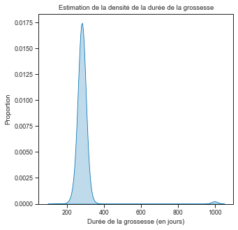
Données aberrantes
Bizarre bizarre des grossesses qui durent 1000 jours, mais que se passe-t-il ici?
percentage_na = np.sum(df_babies['gestation']
== 999) / df_babies['gestation'].count() * 100
print("Il y a {0:.2f}% des grossesses de la base de donnée qui durent 999 jours...".format(
percentage_na)) # {0:.2f} use to display only 2 digits after the sign "." Il y a 1.05% des grossesses de la base de donnée qui durent 999 jours...Pré-traitement: unités non internationales, donnnées manquantes
Lire l’entête du fichier permet de comprendre les problèmes… les unités, les données manquantes, etc. Il faut donc toujours lire les descriptifs des données AVANT de les analyser.
if is_preprocessing_done < 1:
print("You have to do the pre-processing only once, to avoid unit issues")
# Handle missing values (see header of babies23.data for details)
# Unknown gestation duration
df_babies['gestation'].replace(999, np.nan, inplace=True)
# Unknown smoking status of the mother
df_babies['smoke'].replace(9, np.nan, inplace=True)
# Mother's height
df_babies['ht'].replace(99, np.nan, inplace=True)
# Father's height
df_babies['dht'].replace(99, np.nan, inplace=True)
# Father's weight
df_babies['dwt'].replace(999, np.nan, inplace=True)
# Mother's weight
df_babies['wt.1'].replace(999, np.nan, inplace=True)
# Baby's weight
df_babies['wt'].replace(999, np.nan, inplace=True)
# Tabaco consumption
df_babies['number'].replace(
[9, 98, 99], [np.nan, np.nan, np.nan], inplace=True)
# Remove all missing values
df_babies.dropna(inplace=True)
# US researchers use stupid non international units...
df_babies['wt'] = df_babies['wt'] * 0.0283495 # onces -> kg
df_babies['wt.1'] = df_babies['wt.1'] * 0.453592 # pounds -> kg
df_babies['dwt'] = df_babies['dwt'] * 0.453592 # pounds -> kg
df_babies['ht'] = df_babies['ht'] * 2.54 # inches -> cm
df_babies['dht'] = df_babies['dht'] * 2.54 # inches -> cm
# Tabaco consumption: change irrelevant numbers by relevant numbers
df_babies['number'].replace([1, 2, 3, 4, 5, 6, 7, 8, ],
[2.5, 7, 12, 17, 24.5, 34.5, 50, 70], inplace=True)
print("This is done only because {} < 1".format(is_preprocessing_done))
is_preprocessing_done += 1You have to do the pre-processing only once, to avoid unit issues
This is done only because 0 < 1Visualisation
Densité et estimation de densité
plt.figure(figsize=(5, 5))
ax = sns.kdeplot(df_babies['gestation'], shade=True)
plt.xlabel('Durée de la grossesse (en jours)')
plt.ylabel('Proportion')
plt.axvline(40 * 7, c='k') # vertical bar at 40 weeks
plt.title("Estimation de la densité de la durée de la grossesse")
# print("Il y a maintenant {} valeur(s) manquante(s).".format(sum(df_babies["gestation"].isnull())))Text(0.5, 1.0, 'Estimation de la densité de la durée de la grossesse')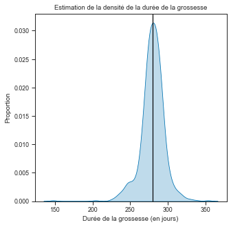
np.quantile(df_babies['gestation'],np.linspace(0.05,0.95,num=19)) array([250. , 262.4, 267. , 270. , 272. , 274. , 275. , 277. , 278. ,
280. , 282. , 283. , 284. , 286. , 288. , 290. , 292. , 295. ,
302. ])pd.set_option('precision', 3) # display 3 digits now in pandasdf_babies['dwt'] # father pre-pregnancy weight in kg0 49.895
1 67.132
5 58.967
7 87.090
8 81.647
...
1231 86.182
1232 77.111
1233 81.647
1234 74.843
1235 78.018
Name: dwt, Length: 695, dtype: float64df_babies['wt.1'] # mother weight in kg0 45.359
1 61.235
5 42.184
7 63.503
8 56.699
...
1231 45.359
1232 54.431
1233 68.039
1234 49.895
1235 58.513
Name: wt.1, Length: 695, dtype: float64df_babies['wt'] # babies weight in kg0 3.402
1 3.203
5 3.856
7 3.742
8 3.402
...
1231 3.203
1232 3.629
1233 3.685
1234 3.544
1235 3.317
Name: wt, Length: 695, dtype: float64df_babies['wt'].max(), df_babies['wt'].min() # max and min weight at birth(4.9895119999999995, 1.5592225)EXERCICE : Estimation de la densité (KDE) par genre
Afficher la masse des parents et visualiser les différences?
# XXX todo# Réponse:
plt.figure(figsize=(3, 3))
plt.title(r"Masse des parents (densité)")
sns.kdeplot(df_babies['dwt'], label="Père", shade=True)
sns.kdeplot(df_babies['wt.1'], label="Mère", shade=True)
plt.xlabel("Masse (kg)")
plt.ylabel("Proportion")
plt.tight_layout()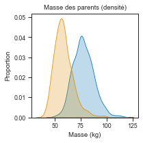
Estimation de la densité par histogramme
fig_hist_height = plt.figure(figsize=(6, 4))
plt.hist(df_babies['ht'], density=True, bins=19)
plt.xlabel('Taille de la mère (en cm)')
plt.ylabel('Proportion')
plt.title("Histogramme de la taille des mères")
my_saving_display(fig_hist_height, dirname,
"hist_height_mother", imageformat, saving=saving)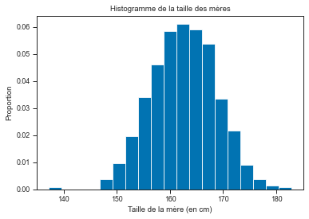
Remarque: pour des données continues, et avec un large échantillon, il semble plus raisonnable d’utiliser les méthodes à noyaux (kde) proposées ci-dessous. Le rendu est plus fidèle à la réalité sous-jacentes. Pour cela on peut regarder ci-dessous l’information proposée par une méthode à noyaux sur les mêmes données.
Estimation de la densité par une méthode à noyaux
fig_hist_height = plt.figure(figsize=(6, 4))
ax = sns.kdeplot(df_babies['ht'], shade=True) # kde = Kernel Density Estimate
plt.xlabel('Taille de la mère (en cm)')
plt.ylabel('Proportion')
plt.title("Densité de la taille des mères")
my_saving_display(fig_hist_height, dirname,
"kde_height_mother", imageformat, saving=saving)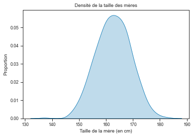
Explication visuelle du fonctionnement des méthodes à noyaux
Voici ci-dessous une explication visuelle du fonctionnement des méthodes à noyaux. Il est à noter que les histogrammes font partie de la même famille, mais au lieu “d’empiler” des densités continues (gaussiennes ici), on empile des densités constantes par morceaux!
n_samples = df_babies['ht'].count() # put 10 to visualize better
# n_samples = 100 # put 10 to visualize better
sample = df_babies['ht'].iloc[0:n_samples]
y = 0.15 * np.random.randn(n_samples,)
bandwidth = 1.5 # KDE parameter / bandwidth
x = np.linspace(sample.min(), sample.max(), num=200)
z = np.zeros(200)
fig, ax = plt.subplots(3, 1, figsize=(8, 6))
# # First plot
ax[0].scatter(sample, y, c='black', s=25,
marker='o',
edgecolors=brown,
linewidths=1
)
ax[0].set_title(
"Taille des mères: observations (avec frémissement / 'jittering')")
ax[0].set_yticks([])
# Second plot
for i in range(n_samples):
current_density = norm.pdf(x, sample.iloc[i], bandwidth)
z += current_density / n_samples
ax[1].plot(x, current_density, '-',
color=sns.color_palette()[0], lw=1, alpha=0.05)
ax[1].set_title(
"Gaussiennes centrées sur les observations (écart-type {0})".format(bandwidth))
ax[1].set_ylim(0, .3)
# Third plot
ax[2].plot(x, z, '-', color=sns.color_palette()[0], lw=1)
ax[2].set_title("Moyenne des gaussiennes précédentes: KDE")
ax[2].set_xlabel('Taille (cm)')
plt.tight_layout() # help improve spacing between subplots
my_saving_display(fig, dirname,
"kde_for_dummies", imageformat, saving=saving)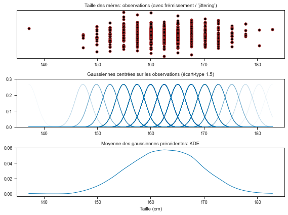
Affichage et coefficient alpha
Dans la partie ci-dessus le coefficient alpha (cf. la figure du milieu ci-dessus) permet d’afficher de manière plus opaque les gaussiennes qui sont plus fréquentes que les autres.
Synthèse de l’échantillon
mean = np.mean(df_babies['ht'])
sd = np.std(df_babies['ht'])
print("Moyenne={0} (cm) et écart-type={1} (cm)".format(mean, sd))Moyenne=162.71715107913673 (cm) et écart-type=6.4288819931782255 (cm)Autres densités unidimensionnelles
EXERCICE : Taille des parents
Afficher sur un même graphique la répartition de la taille des parents, une courbe homme / une courbe femme
# XXX TODO:# Réponse:
plt.figure(figsize=(3, 3))
plt.title("Taille des parents (densité)")
sns.kdeplot(df_babies['dht'], label="Père", shade=True)
sns.kdeplot(df_babies['ht'], label="Mère", shade=True)
plt.xlabel("Taille (cm)")
plt.ylabel("Proportion")
plt.tight_layout() # help improve spacing between subplots (possible difficulty reading label/title without)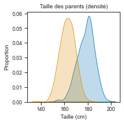
fig_hist_cigs = plt.figure(figsize=(6, 4))
hist_manual = df_babies.loc[df_babies["number"] > -1, 'number']
hist_manual.hist(bins=[0, 1, 5, 10, 15, 20, 30, 40, 60,
71], density=False) # test: True/False
plt.xlabel('Nombre de cigarettes fumées par une mère fumeuse')
plt.ylabel('Effectif')
plt.title("Histogramme de la consommation de cigarettes des mères")
my_saving_display(fig_hist_cigs, dirname,
"hist_cigs_mother", imageformat, saving=saving)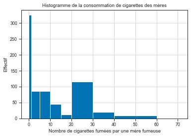
# hist_manual
hist_manual.value_counts() / hist_manual.count() * 1000.0 46.763
24.5 16.547
2.5 12.374
7.0 12.374
12.0 6.331
34.5 2.734
17.0 1.727
50.0 1.151
Name: number, dtype: float64# check sum = 100%
np.sum(hist_manual.value_counts() / hist_manual.count() * 100)100.0# histogram of height by type of smoker: 0 never, 1 now, 2 during pregnancy, 3 within 1yr
df_babies.hist(column='ht', by='smoke',density=True, bins=20, grid=False, layout=(4,1), sharex=True)
plt.xlabel('Taille de la mère (cm)')Text(0.5, 0, 'Taille de la mère (cm)')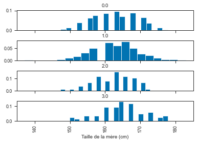
# help on subplots:
plt.subplots?nrow = 4
ncol = 1
fig, axs = plt.subplots(nrow, ncol, figsize=(5, 5), sharex=True)
for i, group in enumerate(df_babies.groupby("smoke")):
if i == 0:
axs[i].set_title("Densité de la taille des mères")
sns.kdeplot(group[1]["ht"], ax=axs[i], label=group[0])
if i == 3:
axs[i].set_xlabel("Taille de la mère (cm)")
plt.tight_layout()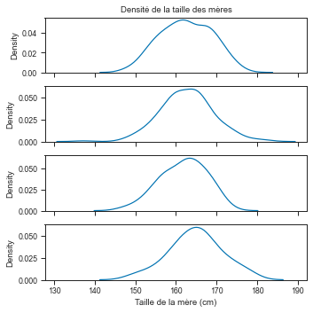
plt.figure(figsize=(6, 4))
df_babies.groupby("smoke").ht.plot(kind='kde')
plt.legend()
plt.xlabel('Taille de la mère (cm)')
plt.ylabel('Proportion')
plt.title("Densité de la taille des mères par niveau de tabagisme")Text(0.5, 1.0, 'Densité de la taille des mères par niveau de tabagisme')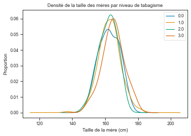
Densité bi-dimensionnelle (le code est hors programme pour la densité bi-dimensionnelle)
La cellule qui suit est inutile en première lecture
path_target = "./plot_species_kde.py"
url_shared_files = "https://raw.githubusercontent.com/scikit-learn/scikit-learn/master/examples/neighbors/plot_species_kde.py"
download(url_shared_files, path_target, replace=False)Replace is False and data exists, so doing nothing. Use replace=True to re-download the data.'./plot_species_kde.py'# le fichier peut être téléchargé ici:
# https://raw.githubusercontent.com/scikit-learn/scikit-learn/master/examples/neighbors/plot_species_kde.py
# et mis dans le repertoire de votre notebook
exec(open('plot_species_kde.py').read())
my_saving_display(fig, dirname, "KDE2D", imageformat, saving=saving) - computing KDE in spherical coordinates
- plot coastlines from coverage
- computing KDE in spherical coordinates
- plot coastlines from coverage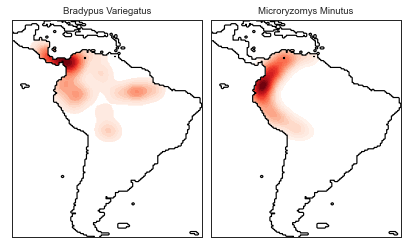
Statistiques descriptives
from scipy import stats
from mpl_toolkits.mplot3d import Axes3D
X = df_babies['dwt'] # Father height
nb_samples = X.shape[0]
y = np.ones(nb_samples,) + 0.05 * np.random.randn(nb_samples,)
# Statistiques:
meanX = np.mean(X) # moyenne
minX = np.min(X) # min
maxX = np.max(X) # max
medX = np.median(X) # médiane
meangeoX = gmean(X) # moyenne géométrique
meanharmoX = hmean(X) # moyenne harmonique
rangeX = maxX - minX
MADX = np.median(np.abs(X - medX)) # mean absolute deviation
s = np.std(X) # standard deviation default of numpy is 1/n, see np.std?
alpha_trim = 0.15
tmeanX = stats.trim_mean(X, alpha_trim) # trimmed mean (level: alpha_trim)
dim1, dim2 = 9, 3
ymax = 1.6Estimateur de position (ou de centrage)
La moyenne (empirique)
fig1, ax = plt.subplots(figsize=(dim1, dim2))
ax.set_ylim(0, 1.1 * ymax)
ax.set_xlim(minX - 0.1 * rangeX, maxX + 0.1 * rangeX)
ax.get_xaxis().tick_bottom()
ax.axes.get_yaxis().set_visible(False)
ax.spines['right'].set_color('none')
ax.spines['top'].set_color('none')
ax.spines['bottom'].set_position(('data', 0.5))
ax.spines['left'].set_color('none')
params = {'color': 'black', 's': 300,
'marker': 'o', 'edgecolors': brown, 'lw': 1}
ax.scatter(X, y, **params)
ax.plot([meanX, meanX], [0, ymax], color=brown, lw=1.5, ls="--")
plt.xlabel(r'$y$', fontsize=18)
plt.annotate(r'$\overline{y}_n$ : moyenne empirique',
xy=(meanX, 0.4), xycoords='data', xytext=(+10, +30),
textcoords='offset points', fontsize=18, color=brown)
plt.tight_layout()
plt.show()
my_saving_display(fig1, dirname, "DadWeightMean", imageformat, saving=saving)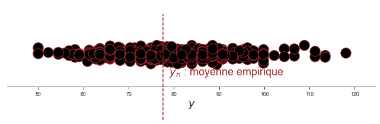
La médiane (empirique)
fig2, ax = plt.subplots(figsize=(dim1, dim2))
ax.set_ylim(0, 1.1 * ymax)
ax.set_xlim(minX - 0.1 * rangeX, maxX + 0.1 * rangeX)
ax.get_xaxis().tick_bottom()
ax.axes.get_yaxis().set_visible(False)
ax.spines['right'].set_color('none')
ax.spines['top'].set_color('none')
ax.spines['bottom'].set_position(('data', 0.5))
ax.spines['left'].set_color('none')
ax.scatter(X, y, **params)
ax.plot([medX, medX], [0, ymax], color=purple, lw=1.5, ls="--")
plt.xlabel(r'$y$', fontsize=18)
plt.annotate(r'$\rm{Med}_n(y):$ médiane empirique',
xy=(medX, 1), xycoords='data', xytext=(-85, +52),
textcoords='offset points', fontsize=18, color=purple)
plt.tight_layout()
plt.show()
my_saving_display(fig2, dirname, "DadWeightMediane",
imageformat, saving=saving)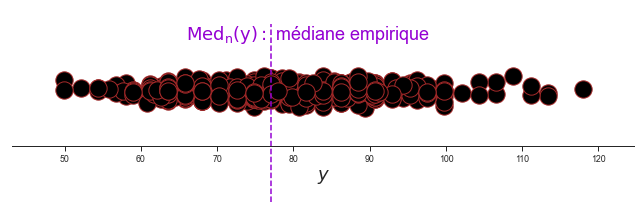
La moyenne tronquée (au niveau \alpha_{trim})
fig1, ax = plt.subplots(figsize=(dim1, dim2))
ax.set_ylim(0, 1.1 * ymax)
ax.set_xlim(minX - 0.1 * rangeX, maxX + 0.1 * rangeX)
ax.get_xaxis().tick_bottom()
ax.axes.get_yaxis().set_visible(False)
ax.spines['right'].set_color('none')
ax.spines['top'].set_color('none')
ax.spines['bottom'].set_position(('data', 0.5))
ax.spines['left'].set_color('none')
ax.scatter(X, y, **params)
ax.plot([tmeanX, tmeanX], [0, ymax], c='blue', lw=1.5, ls="--")
plt.xlabel(r'$y$', fontsize=18)
tt = "$\overline{y}_{n,%s} :$ moyenne tronquée" % str(alpha_trim)
plt.annotate(tt, xy=(tmeanX, 1), xycoords='data', xytext=(+22, +50),
textcoords='offset points', fontsize=18, color='blue')
plt.tight_layout()
plt.show()
my_saving_display(fig1, dirname, "DadWeightTrimmed", imageformat,saving=saving)La moyenne géométrique
fig2, ax = plt.subplots(figsize=(dim1, dim2))
ax.set_ylim(0, 1.1 * ymax)
ax.set_xlim(minX - 0.1 * rangeX, maxX + 0.1 * rangeX)
ax.get_xaxis().tick_bottom()
ax.axes.get_yaxis().set_visible(False)
ax.spines['right'].set_color('none')
ax.spines['top'].set_color('none')
ax.spines['bottom'].set_position(('data', 0.5))
ax.spines['left'].set_color('none')
ax.scatter(X, y, **params)
ax.plot([meangeoX, meangeoX], [0, ymax], color="orange", lw=1.5, ls="--")
plt.xlabel(r'$y$', fontsize=18)
plt.annotate(r'$\overline{y}_n^{{geom}}:$ moyenne géométrique',
xy=(meangeoX, 1), xycoords='data', xytext=(-61, +52),
textcoords='offset points', fontsize=18, color="orange")
plt.tight_layout()
plt.show()
my_saving_display(fig2, dirname, "DadWeightGeomMean",
imageformat, saving=saving)La moyenne harmonique
fig2, ax = plt.subplots(figsize=(dim1, dim2))
ax.set_ylim(0, 1.1 * ymax)
ax.set_xlim(minX - 0.1 * rangeX, maxX + 0.1 * rangeX)
ax.get_xaxis().tick_bottom()
ax.axes.get_yaxis().set_visible(False)
ax.spines['right'].set_color('none')
ax.spines['top'].set_color('none')
ax.spines['bottom'].set_position(('data', 0.5))
ax.spines['left'].set_color('none')
ax.scatter(X, y, **params)
ax.plot([meanharmoX, meanharmoX], [0, ymax], color="silver", lw=1.5, ls="--")
plt.xlabel(r'$y$', fontsize=18)
plt.annotate(r'$\overline{y}_n^{{harmo}}:$ moyenne harmonique',
xy=(meanharmoX, 1), xycoords='data', xytext=(-61, +52),
textcoords='offset points', fontsize=18, color="silver")
plt.tight_layout()
plt.show()
my_saving_display(fig2, dirname, "DadWeightHarmoMean",
imageformat, saving=saving)Comparatif des statistiques de centrages (ou de position)
fig1, ax = plt.subplots(figsize=(dim1, dim2))
ax.set_ylim(0, 1.1 * ymax)
ax.set_xlim(minX - 0.1 * rangeX, maxX + 0.1 * rangeX)
ax.get_xaxis().tick_bottom()
ax.axes.get_yaxis().set_visible(False)
ax.spines['right'].set_color('none')
ax.spines['top'].set_color('none')
ax.spines['bottom'].set_position(('data', 0.5))
ax.spines['left'].set_color('none')
ax.scatter(X, y, **params)
ax.plot([meanX, meanX], [0, ymax], color=brown, lw=1.5, ls="--")
ax.plot([medX, medX], [0, ymax], color=purple, lw=1.5, ls="--")
ax.plot([tmeanX, tmeanX], [0, ymax], color='blue',
lw=1.5, ls="--")
plt.xlabel(r'$y$', fontsize=18)
plt.annotate(r'$\rm{Med}_n(y):$ médiane empirique',
xy=(medX, 1), xycoords='data', xytext=(-85, +30),
textcoords='offset points', fontsize=18, color=purple)
plt.annotate(r'$\bar{y}_n :$ moyenne empirique', xy=(meanX, 0.4),
xycoords='data', xytext=(+10, +30), textcoords='offset points',
fontsize=18, color=brown)
plt.annotate(tt, xy=(tmeanX, 1), xycoords='data', xytext=(+22, +50),
textcoords='offset points', fontsize=18, color='blue')
plt.tight_layout()
plt.show()
my_saving_display(fig1, dirname, "DadWeightMedianeMean",
imageformat, saving=saving)Estimateurs de dispersion
L’écart-type (empirique)
fig1, ax = plt.subplots(figsize=(dim1, dim2))
ax.set_ylim(0, 1.1 * ymax)
ax.set_xlim(minX - 0.1 * rangeX, maxX + 0.1 * rangeX)
ax.get_xaxis().tick_bottom()
ax.axes.get_yaxis().set_visible(False)
ax.spines['right'].set_color('none')
ax.spines['top'].set_color('none')
ax.spines['bottom'].set_position(('data', 0.5))
ax.spines['left'].set_color('none')
ax.scatter(X, y, **params)
altitude = 1.29
arrow_params = {'fc': brown, 'ec': brown, 'head_width': 0.05,
'head_length': 0.1, 'length_includes_head': True}
plt.arrow(meanX, altitude, -s, 0, **arrow_params)
plt.arrow(meanX - s, altitude, s, 0, **arrow_params)
plt.arrow(meanX, altitude, s, 0, **arrow_params)
plt.arrow(meanX + s, altitude, -s, 0, **arrow_params)
plt.xlabel(r'$y$', fontsize=18)
plt.annotate(r'$\bar{y}_n :$ moyenne empirique', xy=(meanX, 0.4),
xycoords='data', xytext=(+10, +30), textcoords='offset points',
fontsize=18, color=brown)
plt.annotate(r'$s_n$', xy=(meanX + s * (0.2), 1), xycoords='data',
xytext=(+10, +40), textcoords='offset points', fontsize=18,
color=brown)
plt.annotate(r'$s_n$', xy=(meanX - s * (0.7), 1), xycoords='data',
xytext=(+10, +40), textcoords='offset points', fontsize=18,
color=brown)
ax.plot([meanX, meanX], [0, ymax], color=brown, lw=1.5, ls="--")
plt.tight_layout()
plt.show()
my_saving_display(fig1, dirname, "DadWeightSD", imageformat, saving=saving)La médiane des déviations absolues
(en : median of absolute deviation (MAD))
fig1, ax = plt.subplots(figsize=(dim1, dim2))
ax.set_ylim(0, 1.1 * ymax)
ax.set_xlim(minX - 0.1 * rangeX, maxX + 0.1 * rangeX)
ax.get_xaxis().tick_bottom()
ax.axes.get_yaxis().set_visible(False)
ax.spines['right'].set_color('none')
ax.spines['top'].set_color('none')
ax.spines['bottom'].set_position(('data', 0.5))
ax.spines['left'].set_color('none')
ax.scatter(X, y, **params)
altitude = 1.29
arrow_params_purple = {'fc': purple, 'ec': purple, 'head_width': 0.05,
'head_length': 0.1, 'length_includes_head': True}
plt.arrow(medX, altitude, -MADX, 0, **arrow_params_purple)
plt.arrow(medX - MADX, altitude, MADX, 0, **arrow_params_purple)
plt.arrow(medX, altitude, MADX, 0, **arrow_params_purple)
plt.arrow(medX + MADX, altitude, -MADX, 0, **arrow_params_purple)
plt.xlabel(r'$y$', fontsize=18)
plt.annotate(r'$\rm{Med}_n(y):$ médiane empirique',
xy=(medX, 0.4), xycoords='data', xytext=(+10, +30),
textcoords='offset points', fontsize=18, color=purple)
plt.annotate(r'$\rm{MAD}_n(y)$', xy=(medX + MADX * (0.01), 1),
xycoords='data', xytext=(+10, +44), textcoords='offset points',
fontsize=14, color=purple)
plt.annotate(r'$\rm{MAD}_n(y)$', xy=(medX - MADX * (1.35), 1),
xycoords='data', xytext=(+10, +44), textcoords='offset points',
fontsize=14, color=purple)
ax.plot([medX, medX], [0, ymax], color=purple, lw=1.5, ls="--")
plt.tight_layout()
plt.show()
my_saving_display(fig1, dirname, "DadWeightMAD", imageformat,saving=saving)Fonction de répartition (empirique)
yrange_lim_down = (0., 1.)
yrange_lim_up = (-0.5, 2)
yrange_lim = (-0.1, 0.5)
xrange_lim = (40, 120)
sorted_data = np.sort(X)
dim1, dim2 = (13, 8)
fontsize = 15
fig1 = plt.figure(figsize=(dim1 * 1.5/2, dim2/2))
# plt.subplots_adjust(hspace=0.3)
ax = fig1.add_subplot(211)
ax.set_ylim(yrange_lim_up)
ax.set_xlim(xrange_lim)
ax.get_xaxis().tick_bottom()
ax.axes.get_yaxis().set_visible(False)
ax.spines['right'].set_color('none')
ax.spines['top'].set_color('none')
ax.spines['bottom'].set_position(('data', 0.5))
ax.spines['left'].set_color('none')
params['s'] = 40
ax.scatter(X, y, **params)
plt.xlabel(r'$y$', fontsize=fontsize)
plt.suptitle(r"Nombre d'échantillons: " + "$n={0}$".format(nb_samples),
multialignment='center')
ax2 = fig1.add_subplot(212)
ax2.set_xlim(xrange_lim)
ax2.set_ylim(yrange_lim_down)
plt.step(sorted_data, np.arange(sorted_data.size, dtype='float') / nb_samples,
color=brown)
plt.ylabel(r'Fréquence cumulée', fontsize=fontsize)
plt.xlabel(r'$y$', fontsize=fontsize)
plt.tight_layout()
plt.show()
my_saving_display(fig1, dirname, "DadWeightcdf", imageformat, saving=saving)EXERCICE : Quelle est la taille des sauts?
Quantiles (empiriques)
fig2 = plt.figure(figsize=(dim1 * 1.5/2, dim2/2))
plt.subplots_adjust(hspace=0.3)
ax = fig2.add_subplot(211)
ax.set_ylim(yrange_lim_up)
ax.set_xlim(xrange_lim)
ax.get_xaxis().tick_bottom()
ax.axes.get_yaxis().set_visible(False)
ax.spines['right'].set_color('none')
ax.spines['top'].set_color('none')
ax.spines['bottom'].set_position(('data', 0.5))
ax.spines['left'].set_color('none')
ax.scatter(X, y, **params)
plt.xlabel(r'$y$', fontsize=fontsize)
plt.suptitle(r"Nombre d'échantillons: " + "$n={0}$".format(nb_samples),
multialignment='center')
ax2 = fig2.add_subplot(212)
ax2.set_xlim(xrange_lim)
ax2.set_ylim(yrange_lim_down)
plt.step(sorted_data, np.arange(sorted_data.size, dtype='float') / nb_samples,
color=brown)
plt.suptitle(r"Nombre d'échantillons: " + "$n={0}$".format(nb_samples),
multialignment='center')
###############################################################################
# Quantile function: First value to display
p = 0.1
q = np.percentile(X, p * 100)
ax2.plot([q, xrange_lim[0]], [p, p], color=brown, lw=1.5, ls="--")
ax2.plot([q, q], [0, p], color=brown, lw=1.5, ls="--")
ax2.annotate(r'$p=%.2f$' % p, xy=(xrange_lim[0], p), xycoords='data',
xytext=(0, 6), textcoords='offset points',
fontsize=fontsize - 3, color=brown)
ax2.annotate(r'$F_n^\leftarrow(p)=%.2f$' % q, xy=(q, 0), xycoords='data',
xytext=(-40, -30), textcoords='offset points',
fontsize=fontsize - 3, color=brown)
###############################################################################
# Quantile function: Second value to display
p = 0.90
q = np.percentile(X, p * 100)
ax2.plot([q, xrange_lim[0]], [p, p], color=brown, lw=1.5, ls="--")
ax2.plot([q, q], [0, p], color=brown, lw=1.5, ls="--")
bbox = dict(boxstyle="round", fc="0.8")
ax2.annotate(r'$p=%.2f$' % p, xy=(xrange_lim[0], p), xycoords='data',
xytext=(0, -13), textcoords='offset points',
fontsize=fontsize - 3, color=brown)
ax2.annotate(r'$F_n^\leftarrow(p)=%.2f$' % q, xy=(q, 0), xycoords='data',
xytext=(-40, -30), textcoords='offset points',
fontsize=fontsize - 3, color=brown)
plt.step(sorted_data, np.arange(sorted_data.size, dtype='float') / nb_samples,
color=brown)
plt.ylabel(r'Fréquence cumulée', fontsize=fontsize)
plt.xlabel(r'$y$', fontsize=fontsize)
plt.tight_layout()
plt.show()
my_saving_display(fig2, dirname, "DadWeightQuantiles",
imageformat, saving=saving)Visualisation (niveau 2)
Boxplots / Boîte à moustache
Visualiser la médiane, les quantiles 1/4 et 3/4, 1.5 inter-quartiles et outliers? voir e.g. : http://www.itse.be/statistique2010/co/233_Cours_boxplot.html
nrow, ncol = (1, 2)
np.random.seed(seed=2021)
fig, axs = plt.subplots(nrow, ncol, figsize=(8, 5), sharey=True)
np.random.seed(seed=2021)
sns.stripplot(y='dwt', ax=axs[0], data=df_babies, orient='vertical',color="black", s=5, edgecolor="black", alpha=.15, jitter=0.07)
axs[0].set_title("Masse du père")
axs[0].set_ylabel("kg")
sns.stripplot(y='wt.1', ax=axs[1], data=df_babies, orient='vertical',color="black", s=5, edgecolor="black", alpha=.15, jitter=0.07)
axs[1].set_title("Masse de la mère")
axs[1].set_ylabel("")
ylims = axs[0].get_ylim()
my_saving_display(fig, dirname, "DadWeightStriplplot",
imageformat, saving=saving)nrow, ncol = (1, 2)
np.random.seed(seed=2021)
fig, axs = plt.subplots(nrow, ncol, figsize=(8, 5), sharey=True)
sns.boxplot(y='dwt', ax=axs[0], data=df_babies, orient='vertical')
axs[0].set_title("Masse du père")
axs[0].set_ylabel("kg")
sns.boxplot(y='wt.1', ax=axs[1], data=df_babies, orient='vertical')
axs[1].set_title("Masse de la mère")
axs[1].set_ylabel("")
my_saving_display(fig, dirname, "DadWeightBoxplot",
imageformat, saving=saving)
np.random.seed(seed=2021)
sns.stripplot(y='dwt', ax=axs[0], data=df_babies, orient='vertical',color="black", s=5, edgecolor="black", alpha=.15, jitter=0.07)
axs[0].set_title("Masse du père")
axs[0].set_ylabel("kg")
sns.stripplot(y='wt.1', ax=axs[1], data=df_babies, orient='vertical',color="black", s=5, edgecolor="black", alpha=.15, jitter=0.07)
axs[1].set_title("Masse de la mère")
axs[1].set_ylabel("")
my_saving_display(fig, dirname, "DadWeightStriplplot_Boxplot",
imageformat, saving=saving)Violons
nrow, ncol = (1, 2)
fig, axs = plt.subplots(nrow, ncol, figsize=(8, 5), sharey=True)
sns.violinplot(y='dwt', ax=axs[0], data=df_babies, orient='vertical')
axs[0].set_title("Masse du père")
axs[0].set_ylabel("kg")
axs[0].set_ylim(ylims)
sns.violinplot(y='wt.1', ax=axs[1], data=df_babies, orient='vertical')
axs[1].set_title("Masse de la mère")
axs[1].set_ylabel("")
my_saving_display(fig, dirname, "DadWeightViolin", imageformat, saving=saving)
np.random.seed(seed=2021)
sns.stripplot(y='dwt', ax=axs[0], data=df_babies, orient='vertical',
color="black", s=5, edgecolor="black", alpha=.15, jitter=0.07)
axs[0].set_ylabel("kg")
sns.stripplot(y='wt.1', ax=axs[1], data=df_babies, orient='vertical',
color="black", s=5, edgecolor="black", alpha=.15, jitter=0.07)
axs[1].set_ylabel("")
my_saving_display(fig, dirname, "DadWeightStriplplot_n_violin",
imageformat, saving=saving)Nouvelle base de données : expérience sur les poussins
Des chercheurs se posent la question de savoir si parmi trois traitements possible, il en existe un meilleur que les autres pour améliorer la prise de masse des poussins. Ils ont consigné l’impact de trois traitements sur la croissance de 45 poussins pour répondre à cette question. Les 45 oeufs sont répartis aléatoirement entre les trois types de traitement (15/15/15). Au bout d’un nombre de jours fixé à l’avance, on mesure la croissance (masse, en décigrammes) du poussin et on note alors son sexe.
# à passer en première lecture si le package donwload n'est pas installé
url = "http://josephsalmon.eu/enseignement/datasets/poussin.txt"
path_target = "./poussins.txt"
download(url, path_target, replace=False)# Le fichier peut être téléchargé ici:
# http://josephsalmon.eu/enseignement/datasets/poussin.txt
# et mis dans le repertoire de votre notebook
df_chicken = pd.read_csv("poussins.txt", sep='\s+') # \s+ : for handling spaces
df_chicken.head(n=5) # df stands for Data Framedf_chicken.columns = ["Traitement", "Sexe", "Masse (dg)"]
df_chicken['Sexe'].replace([1, 2], ["Mâle", "Femelle"], inplace=True)
df_chicken.head()fig_violons = plt.figure()
sns.violinplot(x="Traitement", y="Masse (dg)",
data=df_chicken, palette="muted", scale="count", inner='box')
plt.title("Violons de la masse d'un poulet (dg) selon le traitement appliqué")
my_saving_display(fig_violons, dirname, "Violons_poussin",
imageformat, saving=saving)Conclusion (partielle): À première vue, le traitement 3 semble celui conduisant à une plus grosse croissance des poussins…
Violons avancés
fig_violons_sexe = plt.figure()
sns.violinplot(x="Sexe", y="Masse (dg)", hue="Traitement",
data=df_chicken, palette="muted", scale="count")
plt.title("Violons de la masse d'un poulet (dg) selon le traitement choisi et le sexe")
my_saving_display(fig_violons_sexe, dirname, "Violons_poussin_sexe",
imageformat, saving=saving)df_babies['Statut tabagique'] = np.where(df_babies['smoke']>0, "Mère fumeuse", "Mère non-fumeuse")
fig_violons_fumeurs = plt.figure()
sns.violinplot(y="wt", x="Statut tabagique",
data=df_babies, palette="muted", scale="count"
)
plt.ylabel('Masse du nourisson (en kg)')
plt.title("Violons de la masse du nourisson (kg) selon le niveau de tabac de la mère")
my_saving_display(fig_violons_fumeurs, dirname, "Violons_smoke_weight",
imageformat, saving=saving)Groupement (en: Groupby)
df_chicken.groupby(['Sexe','Traitement']).count()fig1 = plt.figure()
sns.scatterplot(x="Traitement", y="Masse (dg)", hue="Sexe", data=df_chicken, s=100)
frame1 = plt.gca()
frame1.axes.get_xaxis().set_ticks([1,2,3])
plt.legend()
my_saving_display(fig1, dirname, "distribution_poussin", imageformat, saving=saving)Classes déséquilibrées et conclusions hâtives
Dans l’expérience ci-dessus on compte les poussins par type de traitement et par sexe. Ainsi, il y avait 10 femelles qui ont reçu le traitement 1 alors que 5 mâles seulement ont reçu ce traitement 1. Le sentiment visuel que les premiers violons indiquant un avantage du traitement 3 venait simplement du fait que plus de mâles (dont la masse / le rendement est plus gros) avaient reçu le traitement 3. Il faut donc se méfier de comment les classes sont (ou non) équilibrées…
Corrélations
df_babies[["dwt", "dht"]].corr()df_babies[["wt", "ht"]].corr()fig_scatter = plt.figure()
ax = sns.scatterplot(x=df_babies["dht"], y=df_babies["dwt"])
ax.set_title('Masse du père en fonction de sa taille')
ax.set_ylabel('Masse (kg)')
ax.set_xlabel('Taille (cm)')
plt.show()fig = plt.figure()
# Standardization
ax = sns.scatterplot(x=(df_babies["dht"] - df_babies["dht"].mean()) / df_babies["dht"].std(),
y=(df_babies["dwt"] - df_babies["dwt"].mean()) / df_babies["dwt"].std())
ax.set_title('Masse du père en fonction de sa taille')
ax.set_ylabel('Masse (standarisée)')
ax.set_xlabel('Taille (standarisée)')
plt.xlim(-5, 5)
plt.ylim(-5, 5)
ax.set_aspect('equal')
x = np.linspace(-5, 5, num=100)
plt.title("Coefficient de corrélation ({0:.2f})".format(
np.corrcoef(df_babies["dwt"], df_babies["dht"])[0, 1]))
my_saving_display(fig, dirname, "corre_wt_ht_dad", imageformat, saving=saving)
plt.plot(x, np.corrcoef(df_babies["dwt"], df_babies["dht"])[
0, 1] * x) # Least Squares line
my_saving_display(fig, dirname, "corre_wt_ht_dad_w_line",
imageformat, saving=saving)np.corrcoef(df_babies["dwt"], df_babies["dht"])[0, 1]Plus de conseils en Pandas (en anglais):
https://medium.com/dunder-data/minimally-sufficient-pandas-a8e67f2a2428